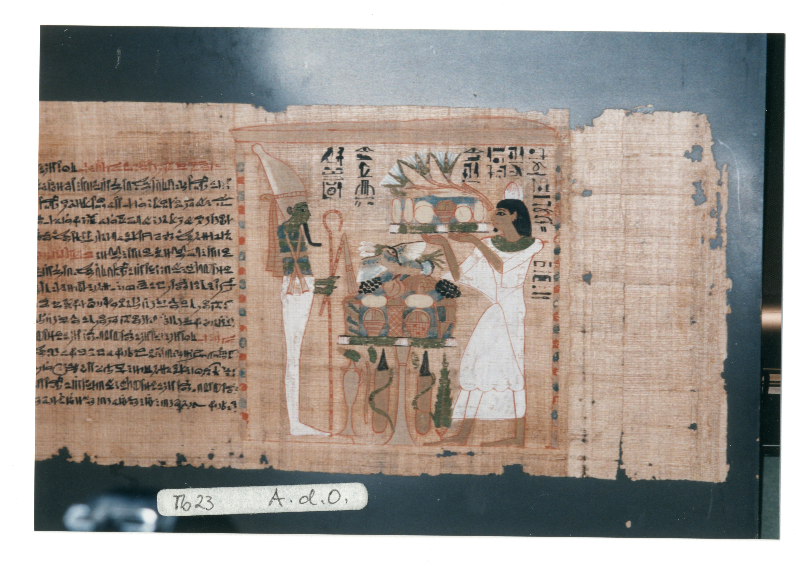
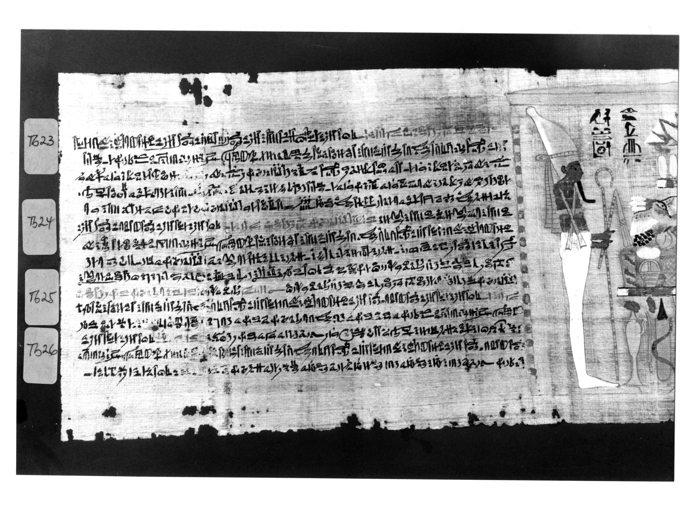

This work is part of a collaboration with the Synoptic Edition of Book of the Dead Spell Sources from the 21st Dynasty. To join the team visit their website https://statbs21d.github.io/
Offices:i͗t- nṯr n Imn- Re nsw.t nṯr.w (God's Father of Amun Re king of the gods) i͗t- nṯr n Mw.t (God's father of Mut), Ḫnsw (Khonsu)
Source: https://totenbuch.awk.nrw.de/objekt/tm134485
Images


| Directly Above the Deceased | |
|---|---|
|
|
| MdC: Wsir snTr in imn-re swt-nTr snTr in mwt | Translation: Osiris, incense for Amun Re king of the gods, incense for Mut |
| Red Portion of Line 1 |
|---|
 |
 |
| MdC: r n wn r n s n.f m xry.t nTr m Dd mdw in |
| The chapter of the opening of the mouth of a man to him in the necropolis words spoken by |
| Download Jsesh File Spruch23_line1red.gly |
| Black Portion of Line 1 |
|---|
 |
| Glyphs |
| MdC: |
| Link to file. |